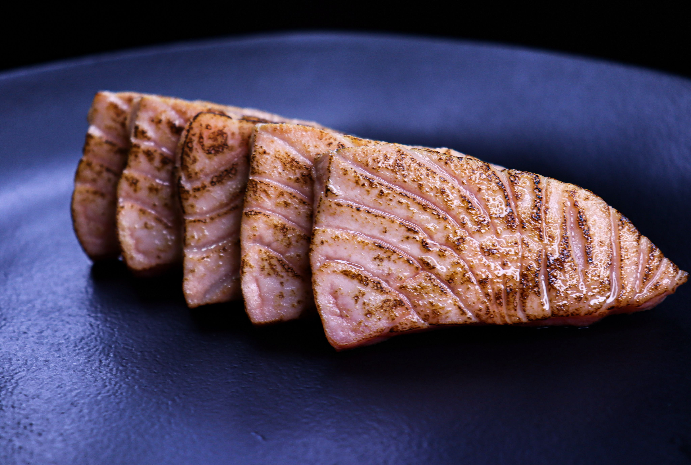

Odin Recipes
Home
Grilled Salmon

Photo by Schena Maria Karlec
Description
Looking for a tasty seafood dish that is fairly simple to make? Grilled salmon is that dish!
Ingredients
- 1 1⁄2 salmon fillets
- lemon pepper to taste
- garlic powder to taste
- salt to taste
- 1⁄3 cup soy sauce
- 1⁄3 cup brown sugar
- 1⁄3 cup water
- 1⁄4 cup vegetable oil
Directions
- Season salmon fillets with lemon pepper, garlic powder, and salt.
- Stir soy sauce, brown sugar, water, and vegetable oil together in a medium bowl until sugar dissolves. Place salmon in a large resealable plastic bag; add soy sauce mixture, seal, and turn to coat. Refrigerate for at least 2 hours.
- Preheat an outdoor grill for medium heat and lightly oil the grate.
- Place salmon on the preheated grill; discard marinade. Cook until salmon flakes easily with a fork, 6 to 8 minutes per side.
Recipe courtesy of tinamenina on AllRecipes